Everything in the toolbox
Editor tools that get VRChat avatars and worlds ready to upload. Click any screenshot to see it full size.
What you see depends on your project: avatar projects get the avatar tools, world projects get the world tools, and the ones marked Any Project load everywhere. Everything except Animation Workbench Pro, the Pipeline Preset Manager, the Scene View Enhancer and Memory Diagnostics needs the VRChat SDK.
Vixen Hub
Any ProjectOne window in Unity for every tool in the toolbox, with its docs and changelog.
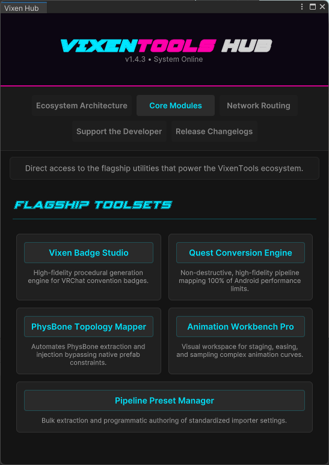
What it does
- Every tool in one place - A card for each tool your project can run. World projects also get on and off switches for the Scene Placement tools.
- The docs, read from the package - News, Overview, Changelog, Supporters, Support and the licences, plus How The Score Works in world projects. They always match the version you have.
- Your real SDK version - The header shows the VRChat SDK you have installed, next to the toolbox version.
- An update notice that waits for you - After an update, a small badge appears in the Scene view instead of a popup. Click it to read what changed.
- Links that do things - A link in the docs either opens a web page or opens the tool it talks about.
How to use it
- Open
VixenTools > Hub Dashboard. - Click a card to open that tool, or open one of the pages to read it.
Avatar Optimization Suite
AvatarBrings a heavy PC avatar down to the Performance Rank you pick, and keeps its face and expressions intact.
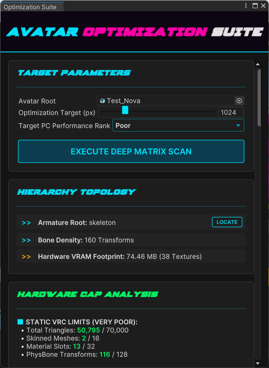
What it does
- Pick a rank, not a number - Choose Excellent, Good, Medium or Poor, and the limits for PhysBones, contacts and animators move to match.
- Reduces meshes carefully - Heavy meshes come down toward your triangle target. UV seams, material edges, eyes, face and hands are protected, and every blendshape is rebuilt so visemes still work.
- Saves texture memory without the blur - Uncompressed textures are offered compression first, which saves as much as halving their size. Resizing comes after, and only for the textures you tick, including ones hidden in toggles and VRCFury.
- Tidies the rig - Folds unused end bones into their parents, and removes empty objects and switched-off components. Anything a PhysBone, constraint or animation uses is left alone.
- Stops the avatar vanishing - Rebuilds each mesh's bounds from its real pose, so it no longer disappears at the edge of the screen.
- You choose what physics goes - Every PhysBone, collider, contact and constraint is listed by depth, so you can drop the tail fluff and keep the main bones.
How to use it
- Open
VixenTools > Avatars > Optimization Suite, pick your avatar and press Scan Avatar. - Choose the Performance Rank you want.
- Tick the fixes you want and press Apply Selected Fixes. Fixes marked Destructive change the avatar in your scene, so keep a backup.
Quest Conversion Engine
AvatarTurns a PC avatar into a Quest one in a separate copy. Your PC avatar is never touched, so you can convert, look, and convert again.
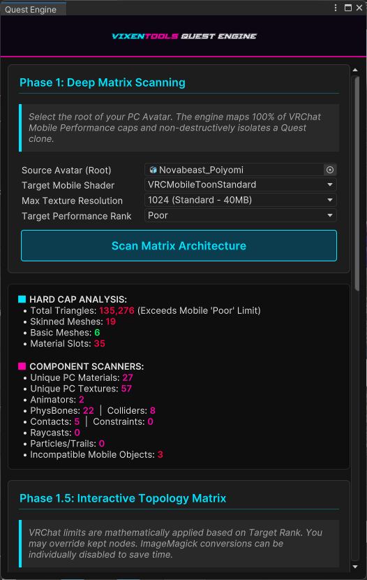
What it does
- Works on a copy - The Quest version is built as a clone under
Assets/VixenTools/QuestConversion. - Removes what Quest rejects - Cameras, lights, audio sources, cloth, rigidbodies, joints, Unity colliders and PC face tracking are locked for removal, so none of them slips into the upload.
- Limits by rank - PhysBones, contacts, constraints, animators and particles are capped for the rank you pick, and you can override each one. Your avatar's own animator is always kept.
- Quest shaders everywhere - Every material copy moves to the VRChat mobile shader you pick, including materials only reached through toggles, animations and VRCFury.
- Smaller textures that stay sharp - Textures are resized to 256 to 2048 pixels in linear light with a light sharpen, so they read as smaller rather than blurry.
How to use it
- Open
VixenTools > Avatars > Quest Conversion Engine, pick your avatar and press Scan Avatar. - Choose a rank and a Quest shader, then check the component and texture lists.
- Press Convert To Quest and check the copy before you upload it.
PhysBone Blueprints
AvatarSaves every PhysBone on an avatar to a file, and puts them all back on another copy of the same rig.
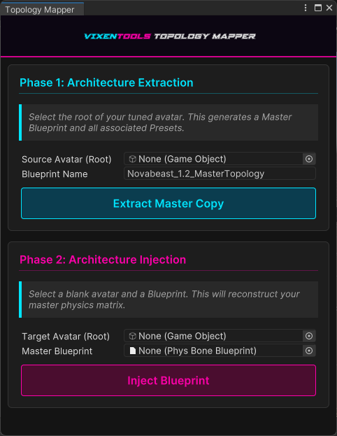
What it does
- Saved by bone path - Each PhysBone is stored by where it sits in the skeleton, so a blueprint still applies after a rebuild, a re-import or an optimisation.
- Everything about each PhysBone - All its settings, plus its colliders, ignore list and root transform.
- Adds what is missing - Applying adds PhysBones where the target has none, keeps several on one bone apart, and is a single undo step.
- Tells you what it could not place - Any bone or collider it cannot find on the target is listed in the Console.
How to use it
- Open
VixenTools > Avatars > PhysBone Blueprints. - Select your finished avatar and press Save Blueprint.
- After a Quest conversion or an optimisation, select that avatar and press Apply Blueprint.
Animator Forge
AvatarFinds and fixes the animator problems behind most SDK warnings, and builds toggles for you without hand-wiring.
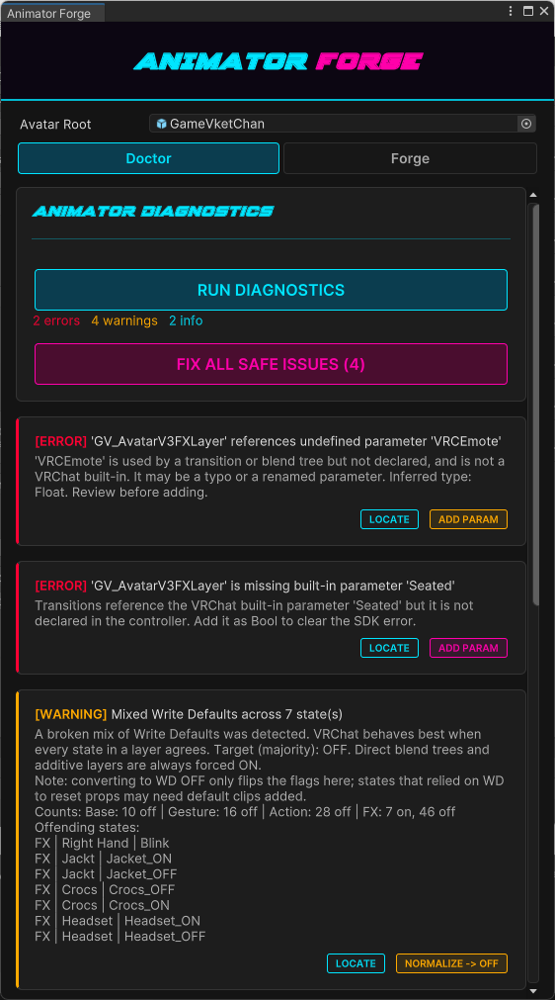
What it does
- A checkup for your animators - The Doctor tab scans your playable layers, Expression Parameters and Menu, and lists each problem by how serious it is, with a fix button where a fix is safe.
- Missing parameters - VRChat's own parameters, like Seated, AFK and the gestures, are added back with the right type. Parameters nobody declared are reported, never made up.
- Write Defaults - Names the states that break your avatar's Write Defaults pattern, and changes them only when you ask.
- The empty clip warning - Clears the SDK's "missing or empty clip" warning with a shared, harmless clip.
- Toggles built for you - The Forge tab builds object toggles, blendshape toggles and sliders, material swaps and exclusive outfit sets. The parameter, menu entry, FX layer and clips are all made to match your avatar.
How to use it
- Open
VixenTools > Avatars > Animator Forgeand pick your avatar. - On the Doctor tab, press Run Diagnostics, then Fix All Safe Issues. Look at the Write Defaults findings on their own, as they change how animations play.
- On the Forge tab, name your rig, pick its type, drag in your objects and press Forge Rig.
Material Conflict Finder
AvatarFinds shader toggles that disagree between your avatar's materials, and keywords left switched on.
What it does
- Toggles that do not match - Lists every shader toggle set differently across your materials. Set them all off, all on, or to what most of them already use.
- Leftover keywords - Finds shader keywords left switched on with nothing using them, and fixes one or all of them.
- Toggles your animations drive - Shows material toggles that animations or VRCFury switch, so you can see where they clash.
- Every material in one list - An inventory of every material it scanned on the avatar.
How to use it
- Open
VixenTools > Avatars > Material Conflict Finderand set your avatar as the Target Avatar Root. - Press Analyze Materials & Toggles and work down the lists.
Accessory Mounting Engine
AvatarMounts props and badges onto a clean copy of your armature, so rigid attachments stop being a rigging job.
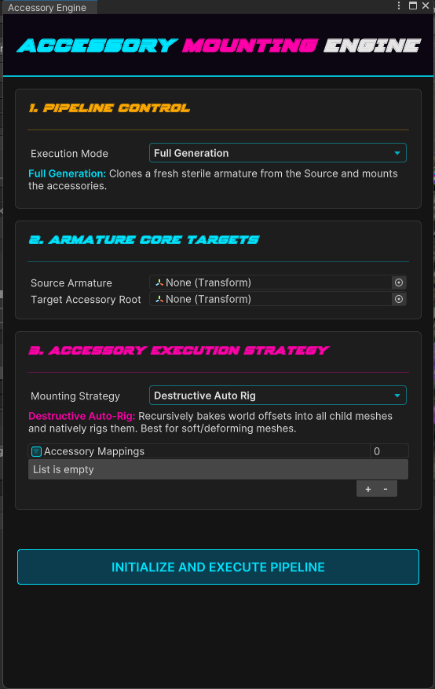
What it does
- A new armature or the one you have - Full Generation clones a fresh armature from your rig. Append To Existing adds to one you made earlier, so a second accessory goes on without redoing the first.
- Auto-Rig - Bakes each mesh into place and binds it to its bone, blendshapes included. A mesh already skinned to several bones is left as it is: for clothing that has to bend with the body, use Modular Avatar Merge Armature or VRCFury Armature Link.
- Kinematic Constraint - Holds a rigid prop, particle system or audio source exactly where you placed it, with a locked Parent Constraint.
- PhysBones keep working - The accessory root is parented and constrained rather than zeroed, so its PhysBones keep their anchor.
- One undo - The whole run is a single undo step, and baked meshes are saved under unique names so nothing is overwritten.
How to use it
- Open
VixenTools > Avatars > Accessory Engine. - Set your source armature, the destination, and each accessory with the bone it belongs on.
- Pick Auto-Rig or Kinematic Constraint for this run and mount.
Vixen Badge Studio
AvatarMakes convention badges from a template: type your name and title, and it renders the textures and fills in your material. Works in the Windows and Linux editors.
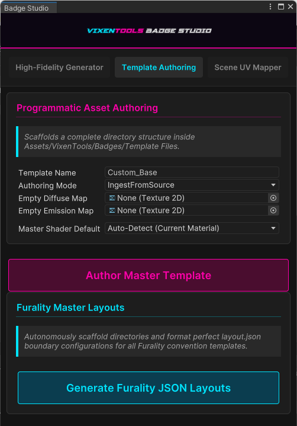
What it does
- Crisp text at any size - Your name and title are drawn with ImageMagick, on badges up to 4096 pixels, and each can be rotated.
- Emission that only lights the text - The glow map is flattened onto black, so nothing around your text glows. Umbra badges are made greyscale, as that convention expects.
- Fills in your material - Writes the main texture, emission map and colours into Standard, Poiyomi, lilToon, the VRChat mobile shaders or Furality's own shaders, and can switch the shader for you.
- Furality layouts included - Generate Furality JSON Layouts writes ready-made text areas for Luma, Umbra, Somna, Sylva and Ultra.
- Your own templates - Author Master Template builds a new template from scratch, or from your own diffuse and emission maps.
- Click to place text - The Scene UV Mapper tab reads the pixel under your cursor on the badge, so you can line up text without an image editor.
How to use it
- Open
VixenTools > Avatars > Badge Studio. - Pick the template and tier, then type your name and title.
- Press Compile High-Fidelity Badge. To move the text, use the Scene UV Mapper, then Save Layout As Default Override.
Live Scene UV Mapper
AvatarPart of Badge Studio. Click your badge in the Scene view to get the pixel position for your text, even on curved badges.
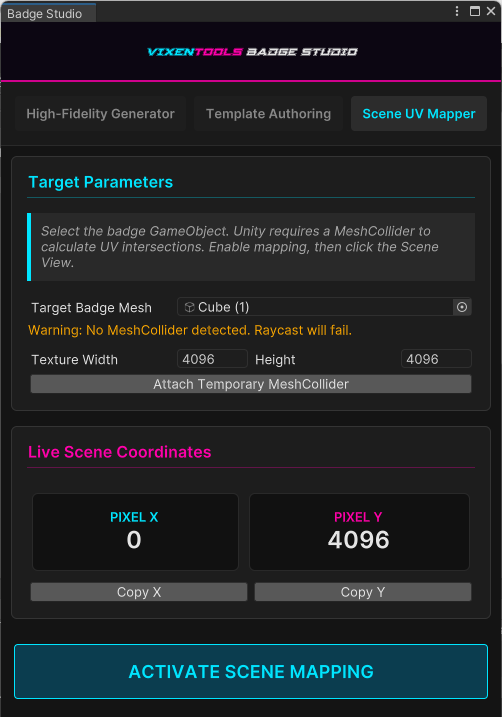
What it does
- A position from a click - Reads the spot you click and turns it into a pixel position on textures from 512 to 4096 pixels, kept inside the texture.
- Copy and paste - Copy X and Copy Y put each value on your clipboard.
- A collider only while you need it - If the badge has no MeshCollider, Attach Temporary MeshCollider adds one. It is removed when you stop mapping or close the window.
- No accidental moves - The move and rotate handles are hidden while you map, and come back the way you left them.
How to use it
- In Badge Studio, open the Scene UV Mapper tab and set your badge mesh.
- Press Activate Scene Mapping and click where the text should go.
- Copy the X and Y into your layout, stop mapping, and rebuild the badge.
VixenMMD
AvatarGets your avatar dancing in MMD worlds. It builds the MMD face shapes those worlds animate from shapes your avatar already has, when you upload, so your avatar files never change. It takes over from Make It MMD and needs NDMF, which comes with Modular Avatar.
What it does
- Auto-fill - Sets up most MMD morphs in one go from your face tracking shapes and visemes. Preview Changes lists everything before you Apply, and Undo takes it all back.
- Build a shape from several - Smiles, blushes and visemes can each be made from more than one of your shapes, which furry bases often need. Every list has a search box.
- Dance Check - Add a dance's
.vmdfile to see which shapes it uses and which ones your avatar is missing, then fill the gaps from face tracking. - Face fixes - MMD worlds only animate a mesh called Body right under your avatar. Rename To Body and Move To Avatar Root put your face there on upload, and your animations still find it.
- Layer Guard - Switches off the FX layers you pick, like hand gestures, only while you are in an MMD world.
- Checks before you upload - Warns about what stops a dance: a face mesh that is not Body, Write Defaults off, a Root Bone that does not follow your hips, an MMD name off by a digit or mark, and an optimizer that would remove the new shapes.
- Safe from VRCFury's optimizer - VRCFury's Blendshape Optimizer leaves every MMD shape on your face alone, even the rare ones its own MMD list doesn't know.
- In your language - English, Japanese, Simplified Chinese or Korean, picked with Editor Language. Every MMD name shows what it does, so you don't need to read Japanese to build a morph.
How to use it
- Install Modular Avatar first. VixenMMD needs NDMF, which comes with it.
- Select your avatar and open
VixenTools > Avatars > VixenMMD. - Coming from Make It MMD? Press Convert Make It MMD Setup and you are done.
- Otherwise, open Auto-fill, press Guess Empty Ones, then Preview Changes and Apply.
- Before a dance night, add the dances to Dance Check and fill in whatever is missing.
Animation Workbench Pro
Any ProjectAnimate any material or component property with exact values and smooth curves, and watch it play in the Scene view first.
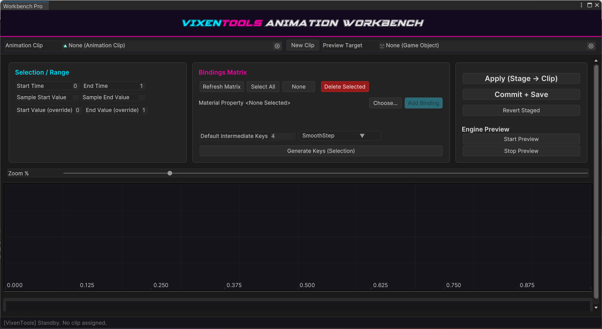
What it does
- Find any shader property - Searches every material on your Preview Target by any part of a name, grouped by material and type. Colours and vectors split into one track per channel.
- Components too - Key a component's on and off, Transform values, or a field on one of your own scripts.
- Curves from numbers - Type the start and end values, pick an easing such as Linear or SmoothStep and how many keys you want, and the curve is built for you.
- A graph you can edit - Zoom and pan, double-click to add a key, right-click to remove one.
- Try before you commit - Play the clip on your target at any speed. Nothing is written to the clip until you apply it.
On a locked Poiyomi material, only properties marked as animated before locking will move.
How to use it
- Open
VixenTools > Unity Engine > Animation Workbench Pro. - Pick a clip and a Preview Target, choose a property and add the binding.
- Generate the curve, preview it, then apply it to the clip.
Pipeline Preset Manager
Any ProjectTurns the import and component settings you like into Presets, and makes them Unity's defaults so new files come in right.
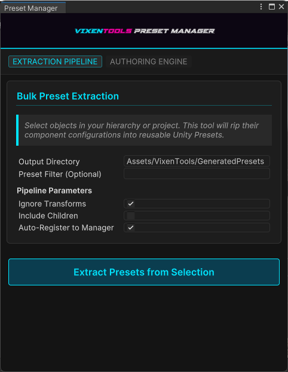
What it does
- Presets from your objects - Select objects, and their children if you like, and get a Preset for every component on them. Transforms can be skipped.
- Texture rules from scratch - Pick the texture type, a max size up to 8K, mipmaps and Read/Write, and it makes the Preset without needing a sample texture.
- Make them the default - Auto-Register to Manager puts each Preset at the top of Unity's Preset Manager, with an optional filter such as
glob:"**/*_BaseColor.png".
How to use it
- Open
VixenTools > Unity Engine > Pipeline Preset Manager. - Extract Presets from your selection, or build a texture rule on the authoring tab.
- Leave Auto-Register to Manager on if new imports should use it.
Scene View Enhancer
Any ProjectA frame cap for the Editor and a small stats panel in the Scene view, so Unity stops working your graphics card harder than it needs to.
What it does
- Frame cap - Sets Unity's Interaction Mode to the frame rate you pick, from 30 to 240, and puts your old setting back when you turn it off.
- Vixen Scene Stats - Shows how often the Scene view redraws, the frame cap, and script, engine and graphics memory. It updates once a second and never makes the view redraw by itself, so a number that climbs while you are idle is worth a look.
- One click to the details - Opens Memory Diagnostics, and Free Unused clears memory nothing is using.
How to use it
- Open
VixenTools > Unity Engine > Scene View Enhancerto turn it on.
Memory Diagnostics
Any ProjectFinds out what is quietly eating Editor memory while you work.
What it does
- Leak Check - Compares two snapshots and shows the textures, materials and meshes that grew in between.
- No false alarms - Only things that are not saved in your project count, so a loaded texture never looks like a leak.
- Largest Textures - The 50 textures using the most memory, with the ones made by a tool or by Unity marked as not saved.
How to use it
- Open
VixenTools > Unity Engine > Memory Diagnosticsand press Take Snapshot. - Repeat the thing you are testing a few times, then press Free Unused Memory.
- Press Compare With Snapshot. Whatever grew is what stayed behind.
Scene Placement Tools
WorldDrop props onto floors and shelves instead of nudging them into place by hand.
What it does
- Live Surface Snapping - Leave it on, and anything you move with the gizmo settles onto the surface below it.
- Precision Click-to-Place - Click a shelf, wall or terrain and the selection lands there, turned to match the surface. A small disc shows where it will go.
- Drop to Surface - A one-off drop for the selection, on
Ctrl + Alt + S. - Sits flush - Uses the lowest point of every collider and renderer, so props with an offset pivot neither float nor sink.
- Skips what it should - Ignores triggers, Water, UI, Player and Pickup layers, and the object's own colliders.
- Moves that stick - Prefab moves are saved as overrides, so they survive reopening the scene.
How to use it
- Turn the tools on and off under
VixenTools > Scene, or from their cards in the Hub. - Missing or black lightmaps after moving a project? Run
VixenTools > Unity Engine > Fix Scene Data.
Quest World Converter
WorldMakes Quest copies of your world's materials, using only shaders VRChat accepts on Quest.
What it does
- Finds every material - Collects the materials on your renderers, terrains and skybox.
- Copies, never edits - Quest copies go into
Assets/VixenTools/Quest World/. Materials already on a Quest shader are left as they are. - Swaps only when you ask - Pointing the scene at the copies is off by default, asks first, and can be undone.
How to use it
- Open
VixenTools > Scene > Quest World Converterand press Scan Open Scenes. - Tick the materials you want and press Convert Selected Materials.
Performance Map
WorldA tab in the World Engine that rates your world from Optimal to Severe, and gives the same result on every PC.
What it does
- Memory estimate - Adds up textures, meshes, UI, lightmaps, Light Volumes, AudioLink and LTCGI data from Unity's own numbers, with audio on its own line.
- Only what is on counts - Switch off a room and its cost leaves the score.
- Weighted by real cost - Draw calls, mesh colliders, realtime shadows, physics, reflection probes, extra cameras, Light Volumes, LTCGI screens and AudioLink each carry their own weight. The Hub's How The Score Works page lists them all.
How to use it
- Open the World Engine and switch to the Performance Map tab.
Vixen World Engine
WorldScans a world for what breaks it once people join: memory, network load, broken shaders and heavy scripts. Most findings come with a one-click fix.
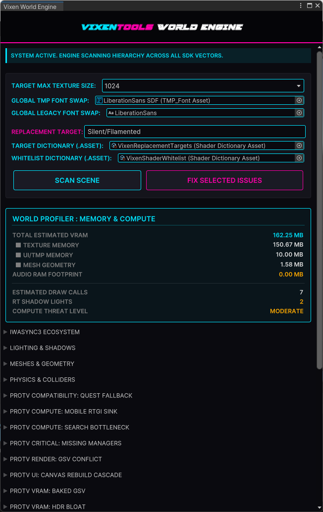
What it does
- Knows your video players - ProTV, IwaSync3, TXL, VizVid and Rinvo are each checked on their own terms. Players set above 1080p get a one-click fix.
- Meshes and colliders - Flags meshes over 10,000 vertices, missing LODs, Read/Write left on, and heavy mesh colliders.
- Texture Check - Fixes import settings like Max Size, normal map format, mipmaps and colour space. Your image files are never rewritten.
- Udon checks - Reads your compiled Udon for scripts that do too much every frame or keep syncing when nothing moves.
- UI, fonts and lighting - Catches mismatched fonts, missing VRC UI Shape, and setup mistakes in LTCGI, Light Volumes and AudioLink.
- A stress test on demand - The Omni-Chaos Generator builds a test scene full of deliberate problems, so you can watch the World Engine catch them.
How to use it
- Open
VixenTools > Scene > Vixen World Engineand press Scan Scene. - Tick the findings you want fixed and press Fix Selected Issues.